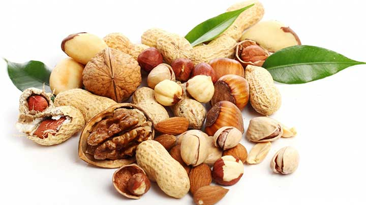

Aşırı şişmanlık veya medyada sık kullanılan şekliyle “Obezite” çağımızın en büyük “korku”larından biri haline geldi. Evet, obezite büyük bir sağlık problemi, ancak her kilolu insan tıbben obez sayılmıyor.
Ekmeği bırakamıyor, etsiz yapamıyoruz. Gelsin börekler, gitsin çörekler… Evet, değişen yaşam standartlarımız da şişmanlamamızda bir etken, ama pek çok insanımızın “hafif kilolu” grubuna girmesinin asıl sebebi yeme alışkanlıklarımız. Yeme alışkanlıklarıyla ufak bir oynama, kiloyu ideal aralığa getirebilir.
Bu basit besin-kalori listesi rejim yapmak isteyenlerin çok işine yarayacak.
Sebzeler (kalori/100 g)
Bezelye: 84
Biber: 22
Domates: 22
Enginar: 53
Kuru Soğan: 38
Salatalık: 15
Patates (Haşlanmış): 76
Patates (Kızarmış): 280
Patates Cipsi: 568
Fasulye: 32
Havuç: 42
Ispanak: 26
Karnabahar: 27
Kereviz: 40
Lahana: 24
Mantar: 28
Marul: 14
Maydanoz: 44
Pancar: 43
Pırasa: 52
Patlıcan: 25
Turp: 19
Taze Mısır: 96
Şarküteri (kalori/100g)
Yumurta (Haşlanmış): 158
Yumurta (Beyazı): 25
Yumurta (Sarısı): 185
Salam: 450
Sosis: 322
Krema: 240
Sucuk: 452
Pastırma: 250
Zeytin (Siyah): 207
Zeytin (Yeşil): 144
Et Ürünleri (kalori/100g)
Tavuk: 215
Kuzu Pirzola: 263
Ördek: 404
Hindi: 160
Dana Eti: 223
Biftek: 156
Koyun Eti (Az Yağlı): 247
Koyun Eti (Az Yağlı): 310
Sığır Eti (Az Yağlı): 225
Sığır Eti (Yağlı): 301
Şekerli Gıdalar (kalori/100 gr)
Bal: 315
Çikolata: 528
Dondurma: 193
Üzüm Pekmezi: 293
Kakao: 289
Şeker: 385
Yağlar (kalori/100g)
İç Yağı: 758
Margarin: 720
Tereyağı: 717
Sıvı Yağ: 884
Kuru Gıdalar (kalori/100g)
Pirinç: 363
Mercimek: 340
Fasulye: 340
Nohut: 360
Unlu Mamuller (kalori/100g)
Makarna: 369
Talaş Böreği: 360
Beyaz Un: 368
Mısır Unu: 368
Elmalı Pasta : 276
Kepek: 213
Yufka: 152
Beyaz Ekmek: 68
Çavdar Ekmeği: 60
Çikolatalı Pasta: 300
Bisküvi: 418
Meyveler (kalori/100g)
Mandalina: 46
Patlıcan: 25
Üzüm: 67
Armut: 61
Ananas: 52
Elma: 58
Kayısı : 51
Muz: 85
Kiraz: 70
Vişne: 58
Şeftali: 38
Erik: 75
Portakal: 79
Limon: 27
İncir: 80
Çilek: 37
Karpuz: 26
Avokado: 147
Kavun: 33
Kivi: 40
Süt Ürünleri (kalori/100g)
Ayran: 37
Beyaz Peynir: 235
Dil Peyniri: 290
İnek Sütü: 61
Koyun Sütü: 108
Kaşar Peyniri: 404
Lor Peyniri: 85
Krem Peynir:349
Tulum Peyniri: 257
Yoğurt: 62
İçecekler (kalori/100g)

Kakao (Süt+Şeker): 91
Kahve (sade): 0
Kolalı İçecek: 39
Şekersiz Çay: 0
Buzlu Çay (Ice Tea): 30
Portakal Suyu: 45
Elma Suyu: 47
Çorbalar (1 kase ~ 150 gr/ml)
Bezelye unu: 170
Bulyon: 30
Et suyu: 35
Hazır kremalılar: 220
Sebze çorba: 85
Soğan çorba: 103
Tavuk suyu: 82
Tatlılar (1 porsiyon ~150 gr)
Elma Komposto: 193
Erik Komposto: 178
İrmik Helvası: 528
Kayısı Komposto: 115
Krem Karamel: 265
Sütlaç: 347
Peynir tatlısı: 110
Puding çikolatalı: 163
Puding vanilyalı: 150
Tel kadayıf: 430